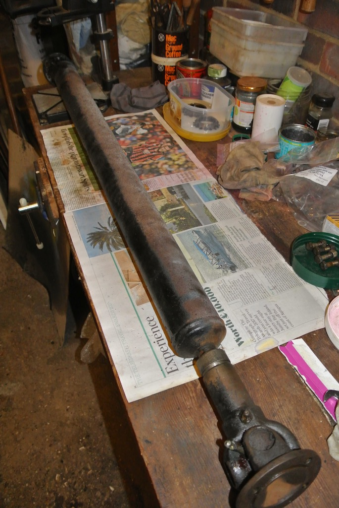
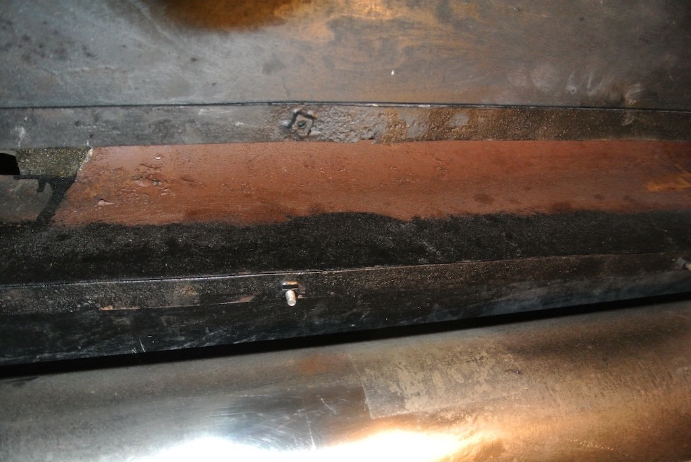
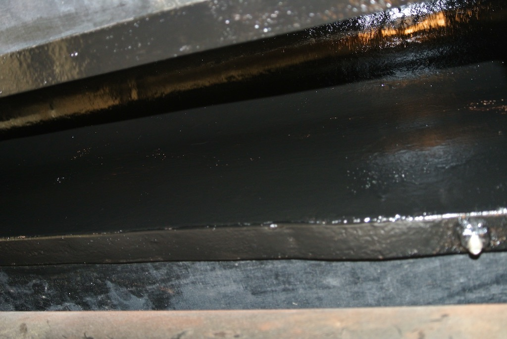
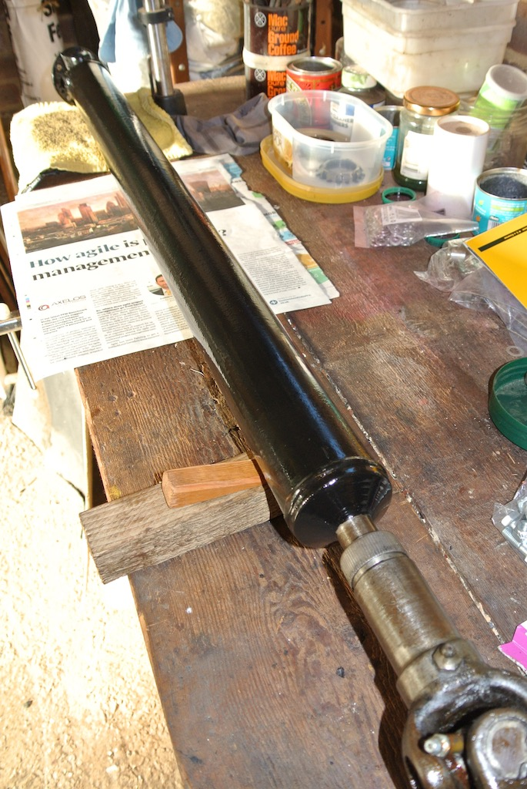
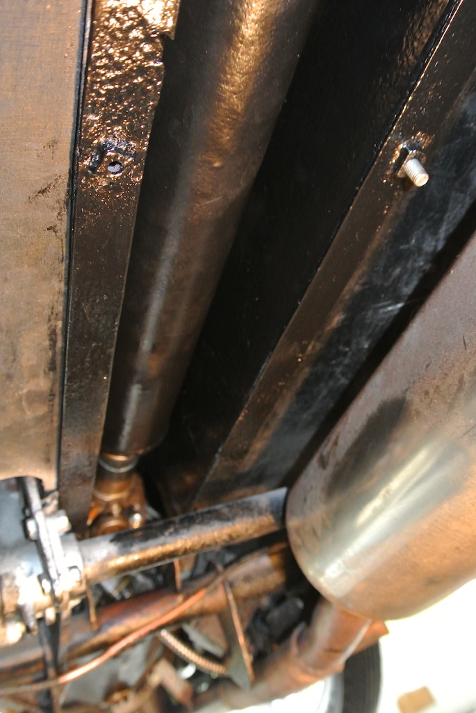

One of the jobs that had been on my list almost since I bought the car in 2015 was to clean up the prop shaft and the underside of the tunnel. It was now September 28th 2017 and while waiting for the new hub and half shaft to arrive, with the car on axle stands, I decided to tackle it. I'd already undone the prop shaft universal joint from the differential (and put it back), so removing the shaft completely did not seem an onerous task. However, access to the differential end of the prop shaft was easy, whereas the gearbox end was obscured by the tunnel, the gearbox mounts and the handbrake cross member.
I removed the carpets and the gearbox cover in the hope that this would give me access to the universal joint, but it did not. So I had to tackle the job from under the car, where the movement of spanners was very limited. I also had to remove the bolts using long-nosed pliers and found that the bolts were 1/2” AF.
After separating the shaft from the differential I found that the front flange wouldn't go into the tunnel, so as to clear the cross members, and so I couldn't get it out. Luckily I could undo the cap that stops the splined end coming off. Then I could remove the end and withdraw the main tube.
One photo shows the prop shaft on the bench, with the splined end replaced. You can see that part of it had been sprayed black. The other photo shows the already painted edge of the tunnel and the rusty top section.
I cleaned the underside of the TC's tunnel with emery cloth and then with thinners before giving it two coats of smooth black Hammerite. After cleaning the prop shaft in the same way I made marks on the tube and splined end with a cold chisel so that I could re-align them. I then also gave the tube section of the prop shaft two coats of Hammerite. Although I cleaned the universal joints and the splined section, I decided not to try to paint them.
 Greased U/Js and splines and refitted prop shaft, using new bolts and aerotight nuts for the gearbox end.
© David James 2017 Last updated: 7th November 2017